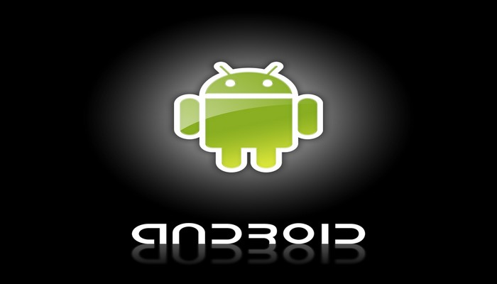
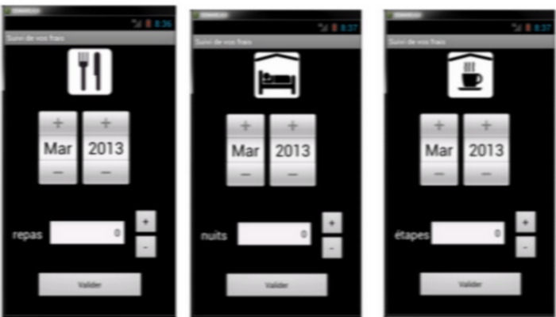

PPE 2 : Application Android
Application d’enregistrement des frais engagés et de suivi des remboursements pour mobile
Présentation du contexte :
L'entreprise concernée Nom et origine du nom : GSB (Galaxy Swiss Bourdin) issu de la fusion entre Galaxy (géant américain) et Swiss Bourdin (européen). Année de fusion des laboratoires pour créer GSB : 2009 Lieu du siège social : Philadelphie, Pennsylvanie (USA) Liste des services présents sur le site parisien : gestion des ressources humaines, comptabilité, direction, commercial, labo-recherche, juridique, communication. Liste des systèmes de protections, physiques et logiques, des données sensibles de l'entreprise : accès sécurisé à la salle serveur (accès par ascenseur avec clé sécurisée, par escalier avec lecteur de badge, sas d'entrée avec gardien), réplication des données aux USA par lien dédié, fonctions de redondances pour assurer une tolérance aux pannes maximale. Format des adresses électroniques : nomUtilisateuràswiss-galaxy.com Nom des bases de données achetées périodiquement : BDMED et BDPHARMA
Définition de l’objet
L'application "Gestion des frais" Objectifs de cette application :
- Enregistrement des frais engagés par les visiteurs (déplacement, restauration, hébergement, événementiel, conférence...)
- Présentation d'un suivi daté des opérations menées par le service comptable (réception des pièces, validation de la demande de remboursement, mise en paiement, remboursement effectué)
- Acteurs concernés : visiteurs, délégués, responsables de secteur, service comptable
Restriction des accès :
- Partie "saisie des comptes rendus" : accessible par la force de visite (visiteurs, délégués, responsables de secteur)
- Partie "gestion des remboursements" : accessible par le service comptable
- Partie de code fournie : La partie "saisie des comptes rendus"
Organisation des remboursements :
- remboursement des péages : pas de remboursement car badge individuel
- remboursement des repas/nuitées/étapes : forfait (pas de justificatif)
- remboursement du trajet : en fonction du kilométrage
- remboursement des autres frais : réel sur justificatif
- durée de conservation des justificatifs : 3 ans
- qui s'occupe des éventuels contrôles : délégués régionaux
- fréquence des remboursements : mensuel
- période de saisie des frais : tout le mois pour les frais du mois en cours et éventuellement ceux de l'année écolée
- période de saisie des frais : tout le mois pour les frais du mois en cours et éventuellement ceux de l'année écoulée
- période de saisie des frais : tout le mois pour les frais du mois en cours et éventuellement ceux de l'année écoulée
- date de clôture de la saisie (soyez précis) : dernier jour du mois (plus précisément, dès la première saisie du mois suivant, ou dès le début de campagne de validation des fiches par le service comptable donc entre le 10 et le 20 du mois suivant)
- procédure en cas d'incohérence de saisie constatée par le service comptable : contact téléphonique avec le visiteur et modification faite directement
- date limite pour adresser les factures : le 10 du mois suivant la saisie
- en cas d'envoi hors délai des factures : le frais concerné est basculé automatiquement sur le mois suivant
- opérations possibles par le service comptable au sujet des frais hors forfaits : validation ou non (si non validation, la demande pour ce frais est supprimée et le visiteur est informé)
- date de mise en paiement : le 20 du mois suivant la saisie
- période de consultation, pour un visiteur, des montants remboursés : un an
Suite aux demandes des visiteurs, une application Android est en cours de développement. Elle doit permettre aux visiteurs de saisir en direct leurs frais (forfaitisés ou hors forfaits). L'application est une sorte de mémo qui permet d'enregistrer l'information à tout moment. Les visiteurs peuvent ensuite consulter leur mobile pour voir ce qu'ils ont enregistré et ainsi remplir le formulaire sur le site officiel. Il est prévu que l'application permette l'envoi direct des informations saisies sur le serveur web qui mettra alors à jour directement la base de données, sans que le visiteur n'ait à ressaisir les données dans l'application web. Cette fonctionnalité ne vous est pas confiée. Actuellement, l'application comporte un menu principal permettant d'accéder à la saisie des différentes catégories de frais ainsi que l'activité portant sur la saisie des km et des frais hors forfait. Une sérialisation permet de mémoriser les informations. Voici les interfaces correspondantes.
Forme de l’objet
En consctruction
.jpg)
Les Missions :
Mission 1 :
Tâche 1 : Configuration L'application existante a été faite avec l'IDE Eclipse et le SDK de l'API 14 (avec un AVD type Nexus S 4,0', 480x800 hdpi). La première étape va consister à récupérer cette application pour l'adapter à l'IDE Android Studio. Pour cela, voici un petit mode opératoire :
- dans le sdk, ajoutez Android 4.0 (API 14)
- dans Android Studio choisir "import project"
- sélectionner le dossier contenant le projet Eclipse
- sélectionner le nouveau dossier de destination (il faut d'abord créer un dossier)
- créer un avd adapté (en utilisant les informations données plus haut)
- dans le dossier res/layout, essayer d'ouvrier un fichier xml pour voir si l'aperçu apparait (sinon utiliser les liens de réparation mis à disposition)
- tester l'application existante et contrôler si les fonctionnalités déjà codées fonctionnent (en particulier la sérialisation pour mémoriser les saisies d'une fois sur l'autre)
Tâche 2 : Enregistrement des autres catégories de frais forfaitisés Créer les autres activités pour la saisie des frais forfaitisés, sur le modèle de la saisie des frais km, en respectant la présentation des interfaces données ci-dessus. Il faudra aussi faire en sorte que les informations soient enregistrées (comme elles le sont déjà pour les km).

Mission 2 :
Tâche 3 :
Ecrie le code derrière le bouton de synchronisation du menu principal, qui va permettre d'insérer dans la base distante tout ce qui a été enregistré en local. Cette tâche est nettement plus complexe et la plus importante.
Experience accomplis :
En consctruction
Technologie utilisée :
Wamp serveur, Eclipse, eGit, github, Phpmyadmin, Xdebug.
Langage utilisé :
HTML/CSS